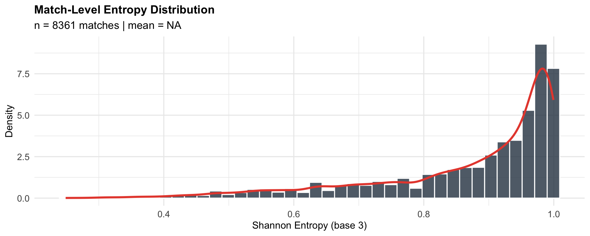
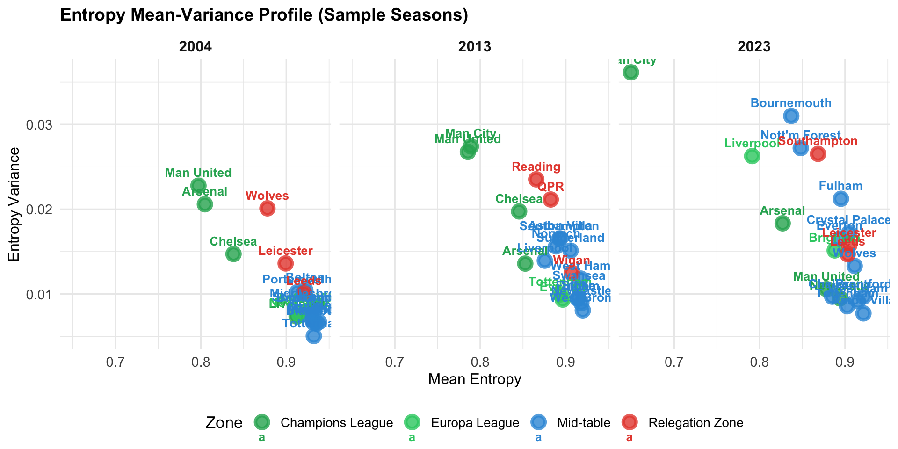
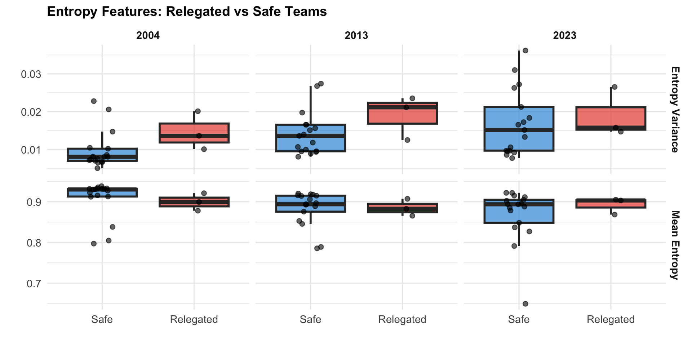
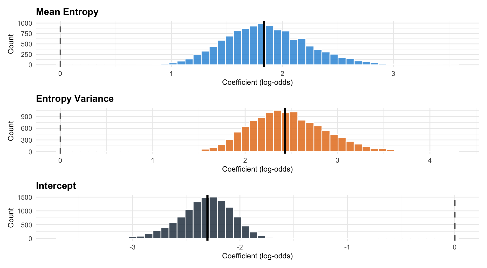
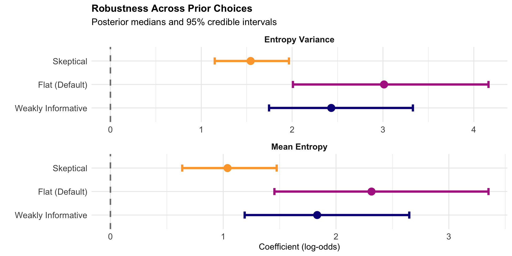
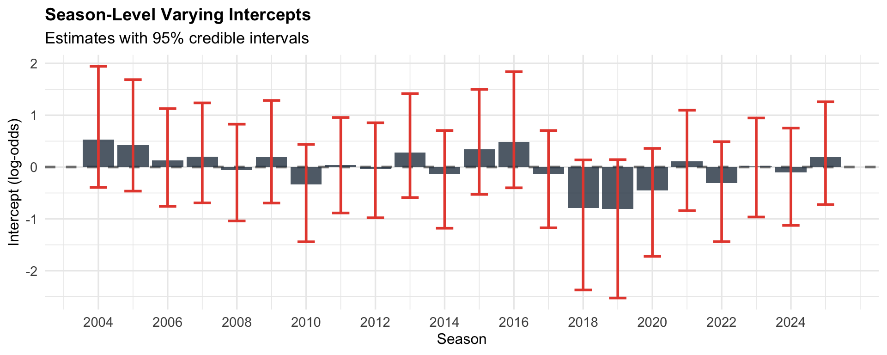

Premier League Match Uncertainty as a Relegation Signal
A Bayesian Hierarchical Analysis of Shannon Entropy from Bookmaker Odds
Research Question
Goal: Determine whether match-level uncertainty (entropy) contains predictive signal for relegation outcomes, beyond what is captured by bookmaker probabilities alone.
Hypothesis: Higher average match uncertainty (entropy) for a team during the season is associated with a higher probability of relegation, controlling for other factors.
Approach: Construct entropy features from calibrated bookmaker odds for each team each season, then use a Bayesian hierarchical logistic regression to predict eventual relegation, pooling across teams and seasons.
Data & Notation
- Match \(i\) in season \(s\) between home team \(h\) and away team \(a\)
- Power-transformed Bet365 probabilities: \(p_{i,s} = (p_{i,w}, p_{i,d}, p_{i,l})\)
- Buchdahl (2019) power / logarithmic method via
impliedR package - Alternative methods available: additive, Shin’s, multiplicative
- Buchdahl (2019) power / logarithmic method via
- Relegation outcome: \(Y_{c,s} \in \{0, 1\}\) = 1 if team \(c\) is relegated at end of season \(s\)
Note: The model uses only information available during the season to predict an outcome realized after the season ends.
| Detail | Value |
|---|---|
| Source | Bet365 odds, English Premier League |
| Seasons | 2004–2025 (22 seasons) |
Shannon Entropy
For match \(i\) in season \(s\):
\[H_{i,s} = -\sum_{k \in \{w,d,l\}} p_{i,s,k} \log_3(p_{i,s,k})\]
Base-3 log normalizes entropy to \([0, 1]\): 0 = perfectly predictable, 1 = maximum uncertainty.
Team-Level Entropy Features
For each team \(c\) in each season \(s\):
| Feature | Definition |
|---|---|
| Mean entropy | \(\bar{H}_{c,s} = \frac{1}{N}\sum_i H_{i,s}\) |
| Entropy variance | \(\text{Var}(H)_{c,s} = \frac{1}{N-1}\sum_i (H_{i,s} - \bar{H}_{c,s})^2\) |
Bayesian Hierarchical Model
\[Y_{c,s} \sim \text{Bernoulli}(p_{c,s})\]
\[\text{logit}(p_{c,s}) = \alpha + \beta_1 \cdot \bar{H}_{c,s} + \beta_2 \cdot \text{Var}(H)_{c,s} + \gamma_s\]
\[\gamma_s \sim \mathcal{N}(0, \sigma_{\text{season}})\]
Priors (predictors standardized to z-scores):
| Parameter | Prior | Justification |
|---|---|---|
| \(\beta_1, \beta_2\) | \(\mathcal{N}(0, 1.5)\) | Weakly informative; 1.5 on logit shifts probability from ~15% to ~50% |
| \(\sigma_{\text{season}}\) | \(\mathcal{N}^+(0, 1)\) | Half-normal; modest season-to-season variation expected |
| \(\alpha\) | \(\mathcal{N}(0, 2)\) | Covers 2%–65% relegation probability at 95% (true rate = 15%) |
Data Summary
Mean-Variance Profile

Relegated vs Safe Teams

Posterior Results
| Parameter | Median | 2.5% | 97.5% | P(>0) |
|---|---|---|---|---|
| Mean Entropy | 1.833 | 1.190 | 2.649 | 1 |
| Entropy Variance | 2.431 | 1.746 | 3.330 | 1 |
| Intercept | -2.302 | -2.862 | -1.880 | 0 |
Posterior Distributions

Prior Sensitivity Analysis

Weakly Informative: \(\mathcal{N}(0, 1.5)\) — allows moderate effects. Flat: \(\mathcal{N}(0, 10)\) — nearly non-informative; tests if data alone drives inference. Skeptical: \(\mathcal{N}(0, 0.5)\) — encodes null that entropy has negligible predictive power; ~10pp change per SD.
Season-Level Variation

Future Work
In-season prediction: Compute rolling entropy up to a fixed matchweek (e.g., MW 30) for mid-season relegation forecasting rather than post-hoc analysis.
Structured priors: Explore Cauchy(0, 2.5) (Gelman et al., 2008) and R2-D2 shrinkage (Zhang et al., 2022) for principled regularization.
References
Buchdahl (2019), Wisdom of the Crowds. Clarke et al. (2017), Am. J. Sports Sci., 5(6).